10 Moves to Make the Most of Your At-Home Workout
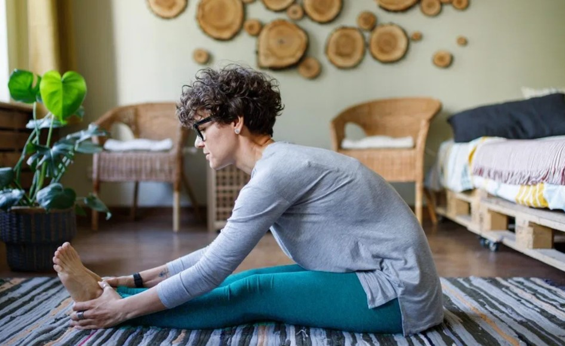
Beginner routine
Our 10 picks for beginner bodyweight exercises will provide a full-body workout.
Complete 2 sets of 10 to 15 reps of each exercise, with 1 minute of rest between each move.
This circuit should take about 15 minutes — a great beginner routine.
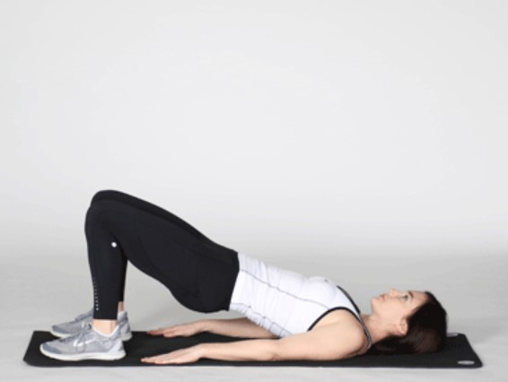
Activate your core and posterior chain (a fancy term for the backside of your body) with a bridge. This is a great exercise to use as a warmup.
Directions:
1. Lie on your back with your knees bent, feet flat on the floor, and your arms extended by your sides.
2. Pushing through your feet and bracing your core, raise your bottom off the ground until your hips are fully extended, squeezing your glutes at the top.
3. Slowly return to the starting position and repeat.
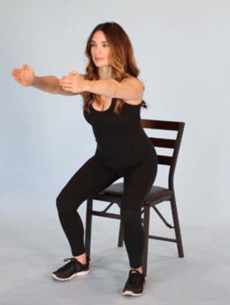
Squat to strengthen your legs and core, which will make everyday movements easier. Starting with a chair underneath you will help you master proper form.
Directions:
1. Stand in front of the chair with your feet shoulder-width apart, toes pointed slightly out.
2. Hinging at your hips and bending your knees, lower back and down until your bottom touches the chair, allowing your arms to extend out in front of you.
3. Push up through your heels and return to the starting position.
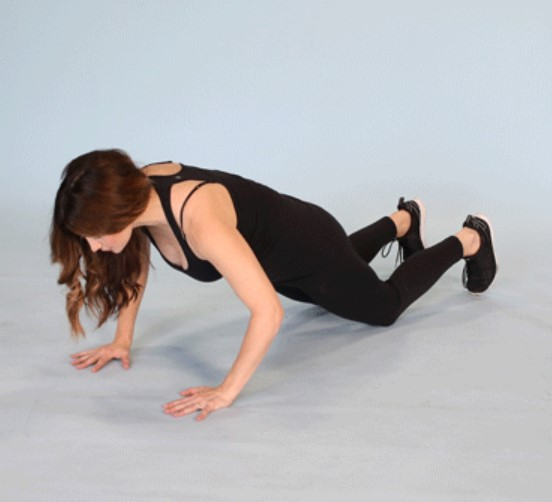
A beginner-style pushup, this move will help you build strength before attempting a standard pushup.
Directions:
1. Get into a high plank position from your knees.
2. Maintaining a straight line from your head to your knees, bend your elbows to lower yourself down to the ground. Keep your elbows at a 45-degree angle.
3. Push back up to start.
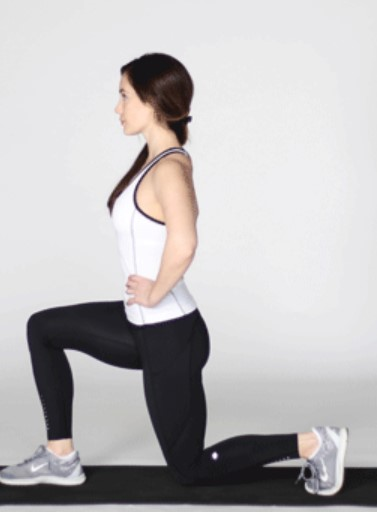
Hit your quads, hamstrings, and glutes with a stationary lunge.
Directions:
1. Split your stance with your right leg in front. Your right foot should be flat on the ground, and your left foot should be up on its toes.
2. Bend your knees and lunge, stopping when your right thigh is parallel to the ground.
3. Push up through your right foot to return to the starting position. Repeat for desired number of reps, then switch legs.
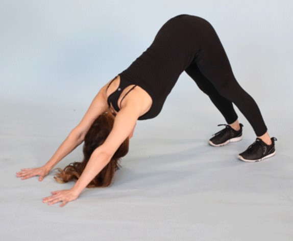
This move will test your upper body, especially your shoulders. Who says you need weights for a shoulder workout?
Directions:
1. Get into a high plank position, with your hands stacked underneath your shoulders and your feet close together.
2. Keeping your core engaged and your hands and feet stationary, pike your hips up and back into the Downward Dog pose. Your body should form a triangle with the ground. Keep your neck neutral. Your gaze should be directed toward your feet.
3. Hold here for a second, then return to the plank. Repeat.
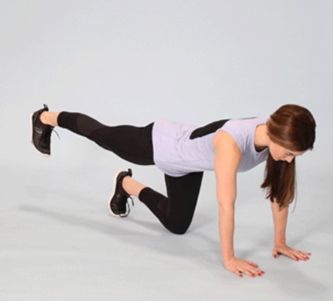
Build those glutes with donkey kicks.
Directions:
1. Get on all fours, with your hands aligned with your shoulders and your knees aligned with your hips.
2. Keeping your back straight, push your right foot out to the imaginary wall behind you while keeping your leg straight.
3. Your foot should remain flexed (toes pointing down to the floor) throughout. Take care to keep your hips square to the ground. Squeeze your buttocks at the top.
4. Return to the starting position. Repeat for the desired number of reps. Repeat on the other leg.
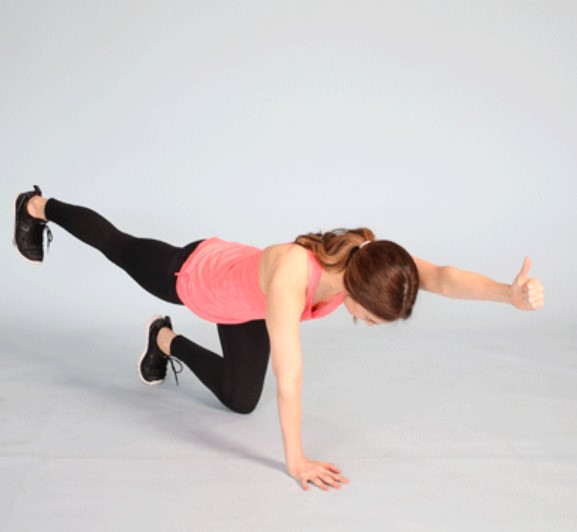
A full-body move that requires balance and stability, the Bird Dog pose is easily scalable to your ability level. Start with this version if you’re a beginner.
Directions:
1. Get on all fours, ensuring your hands are directly underneath your shoulders and your knees are underneath your hips.
2. Keeping your neck neutral, simultaneously extend your left arm and right leg, keeping your hips square to the ground. Pause here for 2 seconds.
3. Return to the start position. Repeat with your right arm and left leg.
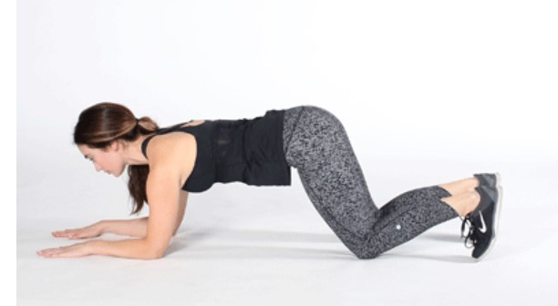
A full-body exercise that requires strength and balance, planks put the core into overdrive.
Directions:
1. Assume a plank position on your forearms. Your body should form a straight line from head to feet.
2. Ensure your lower back and hips don’t sag. Hold the position for 30 seconds to 1 minute.
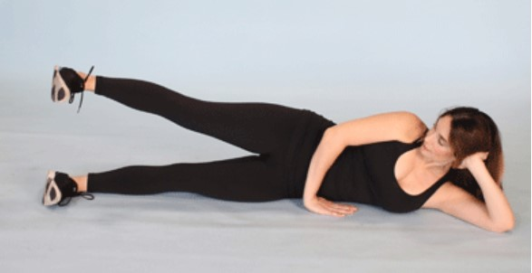
You may not think about strengthening your hip muscles until they start to bother you, but please reconsider!
Directions:
1. Lie on your left side, with your left leg straight, right leg straight, and right foot resting on the ground.
2. Lift your right leg up, maintaining the position of your body. Make sure your hips don’t open up.
3. Return to the start position. Repeat for the desired number of reps, then do the other side.
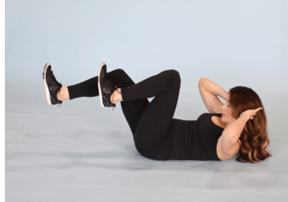
Although you’ll work your core with almost all of these strength exercises, a targeted ab move doesn’t hurt.
Directions:
1. Lie on your back and bring your legs to a tabletop position. Bend your elbows, and put your hands behind your head.
2. Crunch up and bring your right elbow to your left knee, straightening your right leg.
3. Release the crunch slightly. Bend your right leg and straighten your left leg, then bring your left elbow to your right knee.
4. Repeat for the desired number of reps.